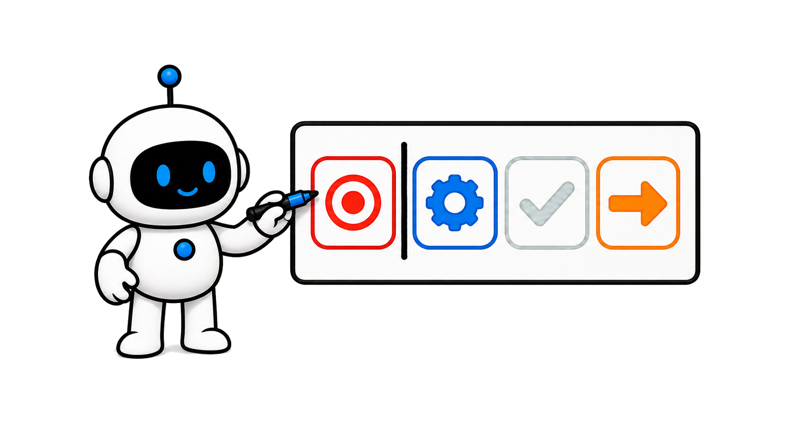

Why do experts amplify agents?


Why do expertsamplifyagents?
Why do experts amplify agents?
Four hundred thousand sessions

Anthropic Four hundred thousand sessions
Four hundred thousand sessions
Four hundred thousand sessionsExpertise enables delegation

Expertiseenablesdelegation
Four-field duty card

Four-fieldduty card
Practical high-value method

Save it Keep the responsibility cardTurn expertise into delegation
Keep the responsibility cardTurn expertise into delegation
Keep the responsibility cardTurn expertise into delegation
Chapter 2
Observe the work split
Observe the real split


Planning defines done
Planning defines done


People own about 70% of planning
People ownabout 70% ofplanning
Agents own about 80% of execution

≠

Agents own about 80% ofexecution
About four turns per session

About fourturns persession
Around ten actions per prompt


Around tenactions perprompt
Every decision needs an owner

Everydecisionneeds anowner
1.Separate planning from execution
2.Delegate verifiable action
3.Correct direction at checkpoints
1.Separate planning from execution
2.Delegate verifiable action
3.Correct direction at checkpoints
1.Separate planning from execution
2.Delegate verifiable action
3.Correct direction at checkpoints
Chapter 3
Expertise expands work
Expertise expands actionchains

Expertise is task-specific


Expertise istask-specific
A domain expert need not be a coder


A domainexpert neednot be a coder
A domain expert need not be a coder
Novice: about five actions
Novice:about fiveactions
Expert: about twelve actions
Expert: abouttwelveactions
Actions and output rise by level
≠

Actions and output rise bylevel
Constraints enable safe progress
Constraintsenable safeprogress
1.Expertise is not a title
2.Precision expands the action chain
3.Evidence beats word count
1.Expertise is not a title
2.Precision expands the action chain
3.Evidence beats word count
1.Expertise is not a title
2.Precision expands the action chain
3.Evidence beats word count
Chapter 4
Allocate by risk
Allocate by risk

Delegate reversible execution

≠

Delegate reversibleexecution
Humans own goals and values
Humans owngoals andvalues
Investigate unfamiliar terrain
Investigateunfamiliarterrain
Reduce autonomy on anomalies
Reduceautonomy onanomalies
Reduce autonomy on anomalies
The ratio is not universal
The ratio is not universal

Write decisions and triggers
Writedecisionsand triggers
1.Use reversibility and uncertainty
2.Keep costly trade-offs human
3.Trigger a timely takeover
1.Use reversibility and uncertainty
2.Keep costly trade-offs human
3.Trigger a timely takeover
1.Use reversibility and uncertainty
2.Keep costly trade-offs human
3.Trigger a timely takeover
Chapter 5
Make expertise visible
Make expertise visible

Define a checkable task
Define a checkable task
Write verification first

Writeverificationfirst
Correct pivotal deviations

Correctpivotaldeviations
Verified success rises with expertise
Verifiedsuccessrises withexpertise
Most gains arrive by competence
Most gainsarrive bycompetence
Design the recovery path
Design therecoverypath
1.Encode knowledge as evidence
2.Fluency is not correctness
3.Preserve takeover paths
1.Encode knowledge as evidence
2.Fluency is not correctness
3.Preserve takeover paths
1.Encode knowledge as evidence
2.Fluency is not correctness
3.Preserve takeover paths
Chapter 6
Use the duty card
Use the duty card

One: planning owner
One: planningowner
Two: execution authority
Two:executionauthority
Two: execution authority
Three: evidence
Three:evidence
Four: failure owner
Four: failureowner
Fill responsibility first
≠
Fill responsibilityfirst
An episode workflow inference
An episodeworkflowinference
1.Name both owners
2.Then grant bounded authority
3.Evidence determines done
1.Name both owners
2.Then grant bounded authority
3.Evidence determines done
1.Name both owners
2.Then grant bounded authority
3.Evidence determines done
Expertise keeps responsibility

Expertisekeepsresponsibility
Research limits remain visible
≠
Research limits remainvisible
Write four fields before the run
Write fourfieldsbefore therun
In June 2026, Anthropic published a privacy-preserving analysis of roughly
four hundred thousand interactive Claude Code sessions from about two
hundred thirty-five thousand people, observed between October 2025 and April
The pattern is not that experts micromanage every action.
2026.
Stronger domain understanding is associated with longer action chains per
instruction and a better ability to recover when the session goes wrong.
This episode turns the findings into a responsibility card: who owns
planning, what execution is delegated, which evidence verifies the result,
and who takes over on failure.
The card is our practical synthesis, not an Anthropic template.
This video is packed with practical, high-value insights to help you get
better at using AI.
It is a longer one, so follow Tiny Agent and save it so you do not lose it.
Start with the observed division of labor instead of treating autonomy as a
single on-or-off setting.
The study separates planning decisions from execution decisions.
Planning covers what to do, which approach to take, and what counts as done.
Execution covers files, code, tools, and commands.
In a typical session, people make about seventy percent of planning
decisions but only about twenty percent of execution decisions.
The common pattern is simple: the person decides what to build, while the
agent decides how to build it.
That does not mean one prompt and a silent exit.
A typical session has about four back-and-forth turns, each offering a
chance to correct direction.
Each user prompt triggers around ten agent actions on average, and the
distribution has a long tail.
One check-in can therefore govern a substantial chain of work.
The useful question is not how many steps the agent may take.
It is which decisions must stay with the person who understands the problem.
Chapter recap.
First, separate what to do from how to execute it.
Second, delegate verifiable execution without giving away the goal.
Third, use staged check-ins to keep the direction correctable.
Next, understand why expertise can expand the agent role instead of
shrinking it.
The study rates apparent task expertise on five levels using precise
framing, requested verification, and who corrects whom.
It is not a job title or a measure of general ability.
A senior engineer can be a novice in an unfamiliar language.
An accountant who defines reconciliation rules and catches a month-end edge
case can be an expert for that task.
In typical novice sessions, one prompt triggers about five agent actions and
roughly six hundred words of output.
In typical expert sessions, the chain exceeds twice as many actions, around
twelve, and carries roughly thirty-two hundred words, about five times the
novice output.
After controls for work mode, task value, month, occupation, and model
family, each expertise level is still associated with about nine percent
more actions and thirteen percent more output.
More text is not automatically better.
Precise constraints let the agent safely advance more checkable work before
the next handoff.
Chapter recap.
First, expertise is specific to the task at hand.
Second, precise constraints expand the agent’s useful action chain.
Third, judge progress by verifiable artifacts, not output length.
Now divide responsibility by capability and uncertainty, not by drawing a
simple human-versus-machine line.
Stable, reversible, rule-bound execution can be delegated in batches:
reading files, making mechanical edits, running checks, and collecting
Goals, value conflicts, hidden constraints, and costly trade-offs stay with
evidence.
a person because they depend on domain context and consequences.
When rules are clear but the environment is unfamiliar, let the agent
investigate and list assumptions, then confirm the boundary before
When failures repeat, evidence conflicts, or the affected scope expands,
execution.
autonomy should decrease and responsibility should return to a person.
The observed Claude Code split is directional evidence from interactive
coding sessions, not a universal ratio for every industry.
Write decision types and escalation triggers on the card.
Do not copy seventy and twenty as fixed operating targets.
Chapter recap.
First, set delegation depth by reversibility and uncertainty.
Second, keep goals, values, and costly trade-offs with a person.
Third, define the failures and conflicts that trigger a takeover.
Turn expertise into observable responsibility actions rather than a vague
claim that an expert is present.
A clear task definition names the object, constraints, completion evidence,
and prohibited actions.
A polished wish is not enough.
Write verification before execution: required tests, primary data,
comparison checks, and the audit trail that must remain.
Expert users correct the agent at pivotal points because they can recognize
fluent work that violates the domain rule.
The study’s strict verified-success rate is fifteen percent for novice-rated
sessions and roughly twenty-eight to thirty-three percent for intermediate
or higher sessions.
Most of the gain occurs between novice and intermediate.
Working competence captures much of the benefit, while deep mastery adds a
smaller margin.
Experts also recover more often when sessions hit trouble.
A responsible workflow needs a recovery path, not only a happy path.
Chapter recap.
First, encode expertise as constraints and completion evidence.
Second, correct pivotal deviations instead of trusting fluency.
Third, preserve a path to diagnose, narrow scope, and take over.
Put the principles into a four-field agent responsibility card.
Field one is the planning owner: who defines the goal, priorities, allowed
trade-offs, and completion standard.
Field two is execution authority: what the agent may read, change, run, and
combine, plus actions that remain prohibited.
Field three is verification evidence: tests, primary sources, diffs, or
reproducible commands attached to every consequential result.
Field four is the failure owner: who takes over after repeated failure,
conflicting evidence, scope expansion, or an irreversible action.
Fill the planning and failure owners first.
Then open execution authority and close the loop by checking each required
piece of evidence.
This card is a workflow inference from the study’s division of labor and
expertise signals.
The report did not validate this specific card.
Chapter recap.
First, name the planning and failure owners.
Second, grant bounded execution authority.
Third, let agreed evidence determine whether the work is done.
Domain experts are effective with agents not because they make agents do
less, but because they clarify goals, constraints, evidence, and takeover
Keep the research boundary visible.
points.
Success is inferred from transcript classifiers and verifiable signals, not
real-world outcomes, and non-interactive usage is excluded.
Before the next AI Agent run, write four fields: planning owner, execution
authority, verification evidence, and failure owner.
Follow Tiny Agent.
How can an
expert let
AI Agent
do more?


Tiny Agent
Get better at using AI.